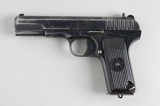

Пистолет TT
Описание
Пистолет ТТ является самозарядным пистолетом, действующим за счёт отдачи при коротком ходе ствола. Схема запирания канала ствола идентична конструкции М. Браунинга.
Вместе с тем, пистолет имеет оригинальные конструкторские решения, направленные на удобство обращения с оружием: объединение ударно-спускового механизма в отдельном едином блоке-колодке, который при разборке оружия свободно отделяется от рамы для чистки и смазки; размещение боевой пружины в курке, что сократило продольную ширину рукоятки; крепление щёчек рукоятки при помощи закреплённых на них поворотных планок, упрощавших разборку пистолета, отсутствие предохранительного механизма — его функцию выполнял предохранительный взвод курка.
Прицельные приспособления состоят из мушки, выполненной заодно с затвором, и целика, впрессованного в паз типа «ласточкин хвост» в задней части затвора. Щёчки рукоятки изготавливались из бакелита или (в годы войны) из древесины (орех).
История:
Пистолет ТТ был разработан для конкурса 1929 года на новый армейский пистолет, объявленного с целью замены револьвера «наган» и нескольких моделей револьверов и пистолетов иностранного производства, находившихся на вооружении Красной Армии к середине 1920-х годов. В качестве штатного патрона был принят немецкий патрон 7,63×25 мм Маузер, который в значительных количествах закупался для состоявших на вооружении пистолетов Mauser C96
По результатам испытаний в конкурсе победил пистолет ТТ, созданный конструкторской группой под руководством Ф. В. Токарева в проектно-конструкторском бюро Тульского оружейного завода. 12 февраля 1931 года Реввоенсовет СССР заказал первую партию из 1000 пистолетов для всесторонних войсковых испытаний. В том же году пистолет Токарева был принят на вооружение под официальным обозначением «7,62-мм самозарядный пистолет обр. 1930 г.» вместе с патроном 7,62×25. Пистолет, получивший название ТТ (Тульский Токарева), был простым и технологичным в производстве и эксплуатации.
После войны пистолет Токарева пользовался популярностью в криминальных кругах из-за доступности, обусловленной большими запасами на военных складах и, соответственно, невысокой ценой на чёрном рынке, а также из-за того, что множество единиц данного оружия не было внесено в пулегильзотеку, что затрудняло идентификацию единицы оружия и прослеживание истории её применения. Широко описываемая в литературе и СМИ тактика исполнителей заказных убийств, когда для выполнения заказа использовался специально приобретённый пистолет ТТ, который убийца после применения оставлял на месте преступления, создало ТТ имидж «пистолета для киллеров». В 1990-е годы к пистолетам производились кустарные глушители.